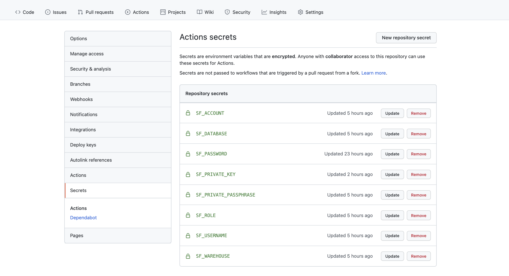
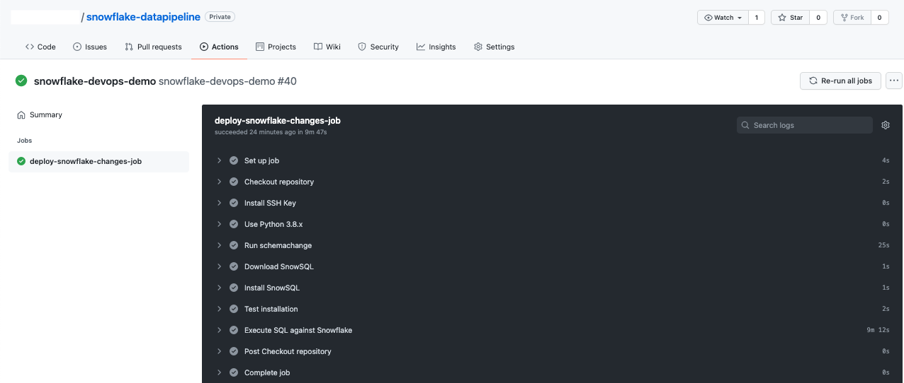

GitHub Actions and Snowflake Integration
The objective of this article is to explore CICD (Continuous Integration / Continuous Deployment) for our data modelling using Github actions and Snowflake data platform.
The benefit of applying CICD concept on your data model is to keep traceability of your model and easy deployment to your data platform, which in this case is Snowflake.
GitHub is used as a repository for the data model. The data model is a collection of sql queries used to generated tables and views.
Authentication:
In this setup, two authentication methods towards Snowflake were tested: using of AzureAD Single Sign On (a.k.a. SSO) and Key-pair authentication. But for the remaining of this article, the key-pair authentication towards Snowflake was used.
Using Key-pair Authentication
In order to use key-pair authentication, we need the following steps:
- Create a key-pair key (private and public key) to be used to Authenticate towards snowflake while running the queries.
- Load the private key unders the secrets of your repository on gitHub used to capture your data model.
- Load your public key to your snowflake account.
Below are the command needs for each step.
Step1 : Creating encrypted key
Using a a linux command line (CLI) you can generate your private (rsa_key.p8) an public key (rsa_key.pub) executing the commands below (ref. Snowflake docs).
I decided to use encrypted private key, which means I created an additional passphrase needed while using the key-pair.
# Create a private encrypted key $ openssl genrsa 2048 | openssl pkcs8 -topk8 -inform PEM -out rsa_key.p8 # Create a public key $ openssl rsa -in rsa_key.p8 -pubout -out rsa_key.pubhttps://docs.snowflake.com/en/user-guide/key-pair-auth.html
Export your private key (rsa_key.p8) and password/passphrase to GitHub Actions under Settings-> Secrets (secrets SF_PRIVATE_KEY and and SF_PRIVATE_PASSPHRASE in picture below):

image-20211026153527604 Write your public key (rsa_key.pub) to your username in snowflake using the command below in Snowflake console:
#Adding public key to snowflake user. You can add a second key also using RSA_PUBLIC_KEY_2 ALTER USER "<your user>" SET RSA_PUBLIC_KEY="< your public key>"; #You can check if key was update by issuing the following command: DESC USER "<your user>";
Beside the key-pair, you also need to pass the authentication parameters needed by snowsql, which are listed below. We will describe snowsql later in this section.
- SF_ACCOUNT:
- SF_DATABASE:
- SF_ROLE:
- SF_USERNAME:
- SF_WAREHOUSE:
Interacting with Snowflake
There are several ways to interact with snowflake. In this notebook, I have tested:
- Snowflake web console
- Snowsql
Using Snowsql
Snowsql is the command line for connecting to Snowflake to execute SQL queries and perform all DDL and DML operations, including loading data into and unloading data out of database tables (ref. SnowSQL (CLI Client)).
Snowsql allows us to use both Single Sign On (SSO) and key-value pair. Below are the commands needed.
Snowsql with SSO
$ snowsql -a <snowflake_account> -u "<snowflake_username>" --authenticator externalbrowserSnowsql with key-pair
#Getting snowsql cli
$ snowsql -a <snowflake_account> -u "<snowflake_username>" --private-key-path ~/.ssh/snowflake-key-private.p8
#Running specific sql file named myfile.sql
$ snowsql -a <snowflake_account> -u "<snowflake_username>" --private-key-path ~/.ssh/snowflake-key-private.p8 -f scripts/myfile.sqlSee the Snowflake documentation https://docs.snowflake.net/manuals/user-guide/snowsql.html for more information on how to interact with snowsql.
Connector Python Library
In addition to snowsql, you can also interact with Snowflake using the snowflake connector python library.
There are two ways of executing queries with the library - execute for synchronous execution and execute_async for asynchronous ones.
The synchronous way is simple and good for a batch of quick/dependent queries. But, if you have independent queries, some of which may take a long time to run, there is no reason to block each other and use the synchronous way (ref. Article).
You can use Snowflake-query GitHub action to run your queries.
GitHub Actions
In this section we show how to configure GitHub actions through a simple workflow. Thereafter we run the workflow manually and the its execution.
Configuring the pipeline workflow
The code below is our data pipeline workflow named snowflake-devops-demo.yml. The workflow is a yaml file located inside the path snowflake-datapipeline/.github/workflows/.Please note that github actions can run several workflow, we only need to create different yaml files within the workflow folder.
# **snowflake-devops-demo.yml.**
name: snowflake-devops-demo
# Environment variable created under github secrets.
env:
SF_ACCOUNT: ${{ secrets.SF_ACCOUNT }}
SF_USERNAME: ${{ secrets.SF_USERNAME }}
SF_ROLE: ${{ secrets.SF_ROLE }}
SF_WAREHOUSE: ${{ secrets.SF_WAREHOUSE }}
SF_DATABASE: ${{ secrets.SF_DATABASE }}
SNOWFLAKE_PRIVATE_KEY: ${{ secrets.SF_PRIVATE_KEY }}
SNOWFLAKE_PRIVATE_KEY_PASSPHRASE: ${{ secrets.SF_PRIVATE_PASSPHRASE }}
SNOWSQL_PRIVATE_KEY_PASSPHRASE: ${{ secrets.SF_PRIVATE_PASSPHRASE }}
# Controls when the action will run. In this case for branch main under changes under the path migrations.
on:
push:
branches:
- main
paths:
- 'migrations/**'
# Allows you to run this workflow manually from the Actions tab
workflow_dispatch:
jobs:
deploy-snowflake-changes-job:
runs-on: ubuntu-latest
steps:
# Checks-out your repository under $GITHUB_WORKSPACE, so your job can access it
- name: Checkout repository
uses: actions/checkout@v2
# Copying our private key under ~/.ssh/
- name: Install SSH Key
uses: shimataro/ssh-key-action@v2
with:
key: ${{ secrets.SF_PRIVATE_KEY }}
name: id_rsa-snowflake
known_hosts: 'just-a-placeholder-so-we-dont-get-errors'
- name: Use Python 3.8.x
uses: actions/setup-python@v2.2.1
with:
python-version: 3.8.x
- name: Download SnowSQL
run: curl -O https://sfc-repo.snowflakecomputing.com/snowsql/bootstrap/1.2/linux_x86_64/snowsql-1.2.19-linux_x86_64.bash
- name: Install SnowSQL
run: SNOWSQL_DEST=~/snowflake SNOWSQL_LOGIN_SHELL=~/.profile bash snowsql-1.2.19-linux_x86_64.bash
- name: Test installation
run: ~/snowflake/snowsql -v
- name: Execute sql files against Snowflake
run: |
echo "Creating SNOWFLAKE_PRIVATE_KEY_PATH variable"
export SNOWFLAKE_PRIVATE_KEY_PATH=~/.ssh/id_rsa-snowflake
echo "Step 3: Executing snowsql"
# Give permission to execute bash script
chmod u+x $GITHUB_WORKSPACE/simple_integration.sh
$GITHUB_WORKSPACE/simple_integration.shThe code below is the content of the simple_integration.sh script, which reads a workflow.conf file and execute each line in snowflake using the snowsql commands.
# simple_integration.sh script that reads workflow.conf file and execute it.
#!/bin/bash
# author: Marcel Castro
set -e
print_log () {
printf "[`date +'%d/%m/%Y %H:%M:%S'`] [$1] $2\n"
}
export -f print_log
run_workflow () {
print_log "INFO" "Running workflow"
workflow_config=$(echo sed -e 's/#.*$//' -e '/^$/d' workflow.conf)
while IFS= read -r sql_file_name; do
print_log "INFO" "Running: $sql_file_name"
print_log "INFO" "Running ~/snowflake/snowsql -a $SF_ACCOUNT -u $SF_USERNAME -r $SF_ROLE -w $SF_WAREHOUSE -d $SF_DATABASE --private-key-path $SNOWFLAKE_PRIVATE_KEY_PATH -f ${GITHUB_WORKSPACE}/${sql_file_name}"
~/snowflake/snowsql -a $SF_ACCOUNT -u $SF_USERNAME -r $SF_ROLE -w $SF_WAREHOUSE -d $SF_DATABASE --private-key-path $SNOWFLAKE_PRIVATE_KEY_PATH -f ${GITHUB_WORKSPACE}/${sql_file_name}
done < <($workflow_config);
}
## running workflow
run_workflowAn example of workflow.conf file can be:
# Create views
views/my_first_view.sql
views/my_second_view.sql
#Create procedures
procedures/my_first_procedure.sql
# Remember to have an empty line by the end at the end of the file
# so that every line is processedRunning the pipeline workflow
You can either run your workflow manually as highlighted in the picture below or triggered by a commit to your repository.
After some minutes you see that the workflow run successfully. The picture below shows the results of each steps within the workflow.

Summary
In this article we explored a simple data workflow using GitHub actions and Snowflake. Github is used a code repository to version our data model.
We introduce the use of GitHub actions as a CICD (Continuous Integration / Continuous Deployment) data pipeline which deploys our simple data model on snowflake through the use of snowsql commands.
The deployment is done in a secure way through the use of key pairs stored in the GitHub actions secrets.
In the future work, I would like to explore the use of dbt (data build tool) to perform data transformation. The idea is to make use of the dbt test and documentation capabilities.